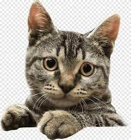
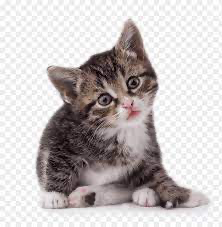

<p style="text-align: center">
  
  

</p>

<script>
  let cat = document.querySelectorAll("img")[0]
  let catTwo = document.querySelectorAll("img")[1]
  let angle = Math.PI
  let spin = 0
  function animate(time, lastTime) {
    if (lastTime != null) {
      angle += (time - lastTime) * 0.001
    }

    if (spin <= 360) {
      spin += 1
    } else {
      spin = 0
    }

    cat.style.top = (Math.sin(angle) * 100) + "px"
    cat.style.left = (Math.cos(angle) * 300) + "px"
    cat.style.transform = `rotate(-${spin}deg)`

    catTwo.style.top = (Math.sin(angle) * -200) + "px"
    catTwo.style.left = (Math.cos(angle) * -300) + "px"
    catTwo.style.transform = `rotate(${spin}deg)`
    requestAnimationFrame(newTime => animate(newTime, time))
  }
  requestAnimationFrame(animate)
</script>